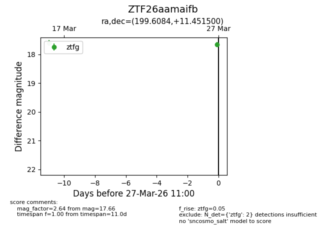
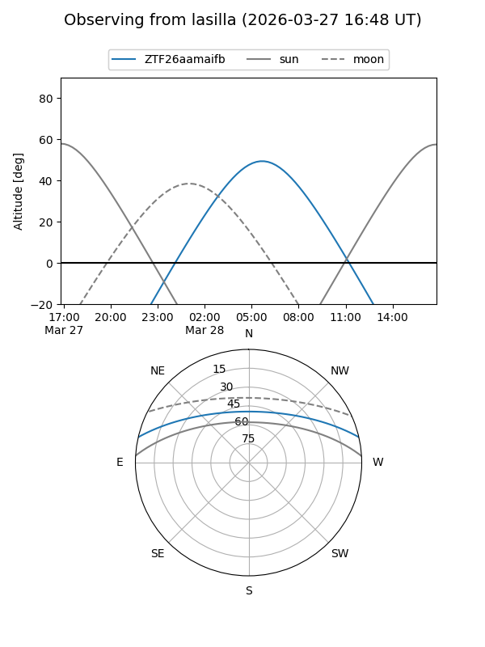
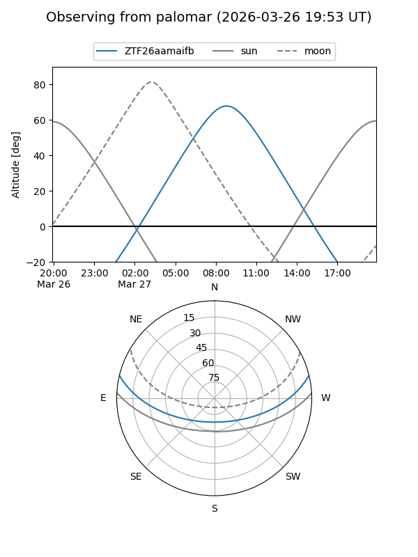

ZTF26aamaifb
Target ZTF26aamaifb at 2026-03-27 11:03
Aliases and brokers:
FINK: link
Lasair: link
ALeRCE: link
alt names
ZTF26aamaifb (ztf,fink_ztf)
Coordinates:
equatorial (ra, dec) = 199.6084,+11.45150
equatorial (HMS+DMS) = 13:18:26.01,+11:27:05.40
galactic (l, b) = (326.2575,+73.08890)
Flags:
Photometry:
last ztfg=17.66
2 ztfg detections
Lightcurve

Visibility


Additional plots